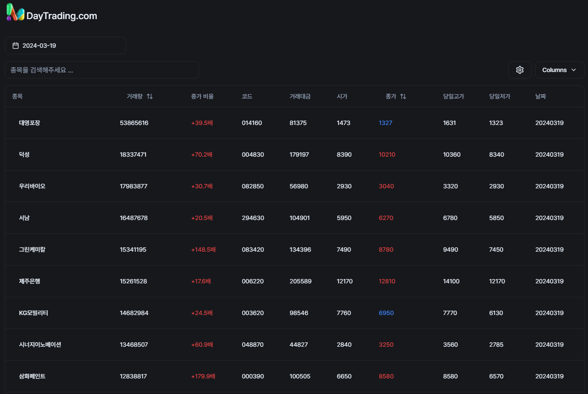

개발 포트폴리오
포트폴리오 리스트
울트라픽스
고화질 VR 영상 거래의 선두주자, 당신의 몰입 경험을 한 차원 높여줄 플랫폼
최신 VR 기술을 활용해 생생한 고화질 영상을 제공, 마치 현장에 있는 듯한 경험을 선사합니다. 다양한 카테고리의 영상을 감상하며, 원하는 콘텐츠를 직접 구매할 수 있는 기회를 제공합니다. 전문가부터 일반 사용자까지 모두의 필요를 만족시키는 고화질 영상 거래 사이트에서 VR의 진정한 매력을 경험하세요. 고품질 영상 구매부터 전문적인 사운드 트랙까지, 모든 것이 가능한 곳입니다.


홈짱
청소 및 인테리어 중개 플랫폼(하이브리드 반응형)
청소와 인테리어의 완벽한 조화, 꿈꾸던 공간을 현실로 만들어주는 중개 플랫폼입니다. 이곳은 전문 청소 서비스와 창의적인 인테리어 디자인을 한데 모아, 집안의 모든 공간을 새롭게 탄생시키는 곳입니다. 사용자는 쉽게 원하는 서비스를 찾고, 신뢰할 수 있는 전문가와 연결될 수 있습니다. 단순한 청소부터 전체적인 인테리어 개선까지, 모든 서비스를 통합하여 제공함으로써, 사용자의 시간과 노력을 절약해 드립니다. 고객의 만족을 최우선으로 하는 저희 플랫폼에서는, 각 분야의 전문가들이 실현 가능한 해결책을 제시하며, 깨끗하고 아름다운 공간 창출을 위해 함께 노력합니다. 꿈꾸던 집을 현실로 만들고 싶다면, 지금 바로 저희 청소 및 인테리어 중개 플랫폼을 이용해보세요

견적주세요
비지니스 견적플랫폼(안드로이드, IOS)
전문가와 고객을 연결하는 원스톱 플랫폼: 여러분의 필요를 만족시킬 수 있는 다양한 분야의 전문가를 찾고 있나요? 이 플랫폼은 숨고와 유사하게 다양한 서비스를 제공하는 전문가들과 고객을 연결합니다. 가정용 수리부터 개인 교습, 이벤트 기획, 건강 및 웰빙 서비스, IT 및 기술 지원에 이르기까지 모든 것을 한 곳에서 찾아보세요. 사용자 친화적인 인터페이스와 평가 시스템을 통해 최적의 서비스 제공자를 쉽게 찾고, 신뢰할 수 있는 리뷰를 바탕으로 정보에 입각한 결정을 내릴 수 있습니다. 당신의 모든 요구를 충족시킬 수 있는 전문가를 찾아, 생활을 더 편리하고 풍요롭게 만드세요.

바이블25
100만 성경플랫폼(안드로이드, IOS)
바이블25는 성경 공부와 영적 성장을 돕기 위해 설계된 모바일 애플리케이션입니다. 사용자가 성경을 읽고, 이해하며, 적용하는 데 필요한 다양한 자료와 도구를 제공합니다. 일일 묵상, 성경 통독 계획, 원어 연구, 주석, 그리고 기도 일기와 같은 기능을 통해 사용자는 자신의 신앙 생활을 깊이 있게 발전시킬 수 있습니다. 바이블25는 사용자가 언제 어디서나 성경의 말씀에 쉽게 접근할 수 있도록 하여, 개인의 영적 여정을 지원하는 데 초점을 맞춘 앱입니다. 이를 통해, 사용자는 일상 속에서 성경 말씀을 더 깊이 연구하고, 삶에 적용하며, 영적으로 성장할 수 있는 기회를 가질 수 있습니다.

전자투표플랫폼
세상의 모든 투표 VOTE
혁신적인 전자투표 플랫폼: 이 플랫폼은 기술을 활용해 투표 과정을 간소화하고, 접근성을 높여 모든 사용자에게 투명하고 공정한 투표 경험을 제공합니다. 온라인으로 진행되는 이 플랫폼은 각종 선거, 의사결정, 설문조사 등에 사용될 수 있으며, 고도의 보안 기술을 적용해 사용자의 정보와 투표 내용을 안전하게 보호합니다. 사용자는 어디서나 편리하게 투표에 참여할 수 있으며, 실시간 결과 확인이 가능해 투명성과 신뢰성을 극대화합니다. 기관, 단체, 기업 등 다양한 조직에서 쉽게 구현할 수 있어, 민주적인 의사결정 과정을 혁신적으로 개선하는 데 기여합니다.

주식 빅데이터 분석 시스템
금융데이터 분석 및 주식 자동매매 프로그램
혁신적인 실시간 트레이딩 시스템: 이 시스템은 금융 데이터와 거래량 분석을 기반으로, 투자자들이 시장의 동향을 실시간으로 파악하고 빠르게 대응할 수 있도록 설계되었습니다. 고급 알고리즘을 활용하여 시장 데이터를 분석하고, 이를 통해 투자 기회를 식별하여 사용자에게 알립니다. 사용자는 이 정보를 바탕으로 즉각적인 트레이딩 결정을 내릴 수 있으며, 시스템은 최적의 진입 및 탈출 시점을 제안합니다. 보안과 투명성을 최우선으로 하여 사용자의 신뢰를 확보하고, 모든 수준의 투자자가 시장 변화에 유연하게 대응할 수 있도록 지원하는 최첨단 트레이딩 솔루션입니다.

주식 종목 추천 알고리즘
종목 추천 서비스
거래량, 시세 등 다양한 데이터를 분석하여 사용자에게 최적의 종목을 추천하여 서비스 하는 솔루션입니다. 매일 새로운 종목 급등 가능한 종목을 추천하고 있습니다.

3D 뷰어 프로그램
3D 파일 뷰잉 프로그램
자동차 설계에 있어서 치수측정 및 부피계산, 면적계산, 시뮬레이션 등 캐드의 기본 기능 및 뷰잉 시스템의 기본 기능을 지원합니다. 다양한 포맷으로 된 3D 파일을 뷰잉할 수 있으며, 사용자는 쉽게 원하는 파일을 찾고, 신뢰할 수 있는 전문가와 연결될 수 있습니다. 단순한 뷰잉부터 전체적인 시뮬레이션까지, 모든 서비스를 통합하여 제공함으로써, 사용자의 시간과 노력을 절약해 드립니다.